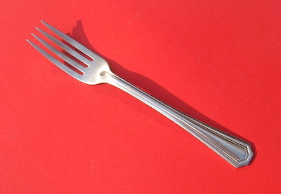

Today you get your first taste of the basic development cycle. It’s okay if it all feels weird at first; by the end of the semester you’ll be committing in your sleep.
Students will consider and document their expectations for the course.
Students will fork an open source repository, clone it to their development machine, use command line tools to modify the content according to instructions, commit their changes, and push the new repository to their public GitHub account. Yes, kind of a big deal.
One of the outcomes for this module was for students to report on their expectations for the class. Here is a sampling of ideas and possible goals mentioned in the first class meeting:
At least two or three of these things will happen :)